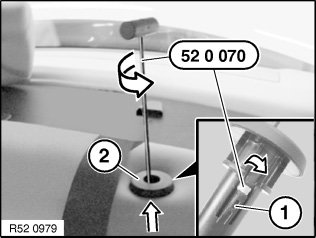
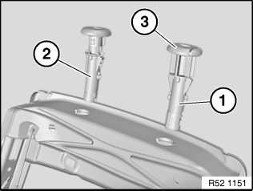

52 13 ... Replacing Guide Sleeves For Front Left or Right Head Restraint
52 13 ... Replacing guide sleeves for front left or right head restraint
Special tools required:

Necessary preliminary tasks:
- Remove front head restraint
NOTE:
- Guide sleeves cannot be removed without being damaged.
- Guide sleeves with pushbuttons have two retaining lugs.

Insert special tool 52 0 070 into guide hole of sleeve (2) up to upper area of retaining lug.
Feed release tongue of special tool into gap on retaining lug (1).
Turn special tool to release sleeve (2) and pull out towards top.
If necessary, on guide sleeves with pushbuttons, unlock the second retaining lug with a screwdriver.

Installation:
Replace guide sleeves and install as follows:
1. Guide sleeve with pushbutton (3) and two retaining lugs, left
2. Guide sleeve without pushbutton and one retaining lug, right